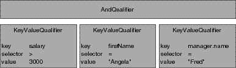

Extends:
next.util.NextObject
| Subclass | Purpose |
| KeyValueQualifier | Compares the named property of an object to a supplied value, for example, "weight > 150". |
| KeyComparisonQualifier | Compares the named property of one object with the named property of another, for example "name = wife.name". |
| AndQualifier | Contains multiple qualifiers, which it conjoins. For example, "name = 'Fred' AND age < 20". |
| OrQualifier | Contains multiple qualifiers, which it disjoins. For example, "name = 'Fred' OR name = 'Ethel'". |
| NotQualifier | Contains a single qualifier, which it negates. For example, "NOT (name = 'Fred')". |
| SQLQualifier | Contains unstructured text that can be transformed into a SQL expression. SQLQualifier provides a way to create SQL expressions with any arbitrary SQL. Because SQLQualifiers can't be evaluated against objects in memory and because they contain database and SQL-specific content, you should use Qualifier wherever possible. |
With the exception of SQLQualifier, qualifiers aren't based on SQL and they don't rely upon a next.eo.Model object. Thus, the same qualifier can be used both to perform in-memory searches and to fetch from the database. The interface QualifierEvaluation defines how qualifiers are evaluated in memory. To evaluate qualifiers in a database, methods in next.eo.SQLExpression and next.eo.Entity are used to generate SQL for qualifiers. Note that all of the SQL generation functionality is contained in the access layer.
qualifierWithQualifierFormat, as follows:
Qualifier qual = Qualifier.qualifierWithQualifierFormat("lastName = 'Smith'", null);
The qualifier or group of qualifiers that result from such a statement is based on the contents of the format string you provide. For example, giving the format string "lastName = 'Smith'" as an argument to qualifierWithQualifierFormat returns a KeyValueQualifier object. But you don't normally need to be concerned with this level of detail.
The format strings you use to create a qualifier can be compound logical expressions, such as "firstName = 'Fred' AND age < 20". When you create a qualifier, compound logical expressions are translated into a tree of Qualifier nodes. Logical operators such as AND and OR become AndQualifiers and OrQualifiers, respectively. These qualifiers conjoin (AND) or disjoin (OR) a group of sub-qualifiers. This is illustrated in Figure 1, in which the format string "salary > 300 AND firstName = 'Angela' AND manager.name = 'Fred'" has been translated into a tree of qualifiers.

Figure 1 Qualifier Tree for salary > 300 AND firstName = "Angela" AND manager.name = "Fred"
Note that the qualifierWithQualifierFormat method can't be used to create an instance of SQLQualifier. This is because SQLQualifier uses a non-structured syntax. It also requires an entity. To create an instance of SQLQualifier, you'd use a statement such as the following:
Qualifier myQual = new SQLQualifier(myEntity, myFormatString);
qualifierWithQualifierFormat. This method takes as an argument a format string somewhat like that used with the standard C printf() function. The format string can embed strings, numbers, and other objects using the conversion specification %@. The second argument to qualifierWithQualifierFormat is an array that contains the value or result to substitute for any %@ conversion specifications. This allows qualifiers to be built dynamically. The following table lists the conversion specifications you can use in a format string and their corresponding data types.
| Conversion Specification | Expected Value or Result |
| %@ | It can either be an object whose toString (or description) method
returns a key (in other words, a java.lang.String), or a value object
such as an java.lang.String, java.lang.Number, java.util.CalendarDate,
and so on.
|
| %% | Results in a literal % character.
|
empID, firstName, lastName, salary, and department (representing a to-one relationship to the employee's department), and a Department entity with properties deptID, and name. You could construct simple qualifier strings like the following:
lastName = 'Smith'
salary > 2500
department.name = 'Personnel'
The following code builds qualifiers similar to the qualifier strings described above, but take the specific values from already-fetched enterprise objects:
Employee anEmployee; // Assume this exists.
Department aDept; // Assume this exists.
Qualifier myQualifier;
MutableVector args = new MutableVector();
args.addElement("lastName");
args.addElement(anEmployee.lastName());
myQualifier = Qualifier.qualifierWithQualifierFormat("%@ = %@", args);
args.removeAllElements();
args.addElement("salary");
args.addElement(anEmployee.salary());
myQualifier = Qualifier.qualifierWithQualifierFormat("%@ > %f", args);
args.removeAllElements();
args.addElement("department.name");
args.addElement(aDept.name());
myQualifier = Qualifier.qualifierWithQualifierFormat("%@ = %@", args);
The enterprise objects here implement methods for directly accessing the given attributes: lastName and salary for Employee objects, and name for Department objects.
Unlike a string literal, the %@ conversion specification is never surrounded by single quotes:
// For a literal string value such as Smith, you use single quotes.
Qualifier.qualifierWithQualifierFormat("lastName = 'Smith'", null);
// For the conversion specification %@, you don't use quotes
args.removeAllElements();
args.addElement("Jones");
Qualifier.qualifierWithQualifierFormat("lastName = %@", args);
Typically format strings include only two data types: strings and numbers. Single-quoted or double-quoted strings correspond to java.lang.String objects in the argument array, non-quoted numbers correspond to java.lang.Numbers, and non-quoted strings are keys. You can get around this limitation by performing explicit casting, as described in the section ""Using Different Data Types in Format Strings"."
The operators you can use in constructing qualifiers are =, ==, !=, <, >, <=, >=, "like", and "caseInsensitiveLike". The like and caseInsensitiveLike operators can be used with wildcards to perform pattern matching, as described in "Using Wildcards and the like Operator."
MutableVector args = new MutableVector();
// Approach 1
Qualifier.qualifierWithQualifierFormat("bonus = nil", null);
// Approach 2
args.addElement(NullValue.nullValue());
Qualifier.qualifierWithQualifierFormat("bonus = %@", args);
like or caseInsensitiveLike operator in a qualifier expression, you can use the wildcard characters * and ? to perform pattern matching, for example:
"lastName like 'Jo*'"
matches Jones, Johnson, Jolsen, Josephs, and so on.
The ? character just matches a single character, for example:
"lastName like 'Jone?'"
matches Jones.
The asterisk character (*) is only interpreted as a wildcard in expressions that use the like or caseInsensitiveLike operator. For example, in the following statement, the character * is treated as a literal value, not as a wildcard:
"lastName = 'Jo*'"
myMethod:) as a method. For example:
point1 isInside: area
firstName isAnagramOfString: "Computer"
Methods specified in a qualifier are parsed and applied only in memory; that is, they can't be used in to qualify fetches in a database.
For example, next.util.CalendarDate and next.util.DecimalNumber are two classes that are likely to be used in qualifiers. You can construct format strings for objects of these classes as follows:
"dateReleased < (NSCalendarDate)'1990-01-26 00:00:00 +0000'"
"salary = (NSDecimalNumber)'15000.02'"
When you use this approach, qualifiers are constructed by looking up the class and invoking a constructor that takes a java.lang.String argument. Therefore, this technique only works for classes that have such a constructor.
Note that to construct a date qualifier using a format string, you must use the default CalendarDate format, which is %Y-%m-%d %H:%M:%S %z. This limitation doesn't apply when you're working with CalendarDate objects-you can just construct a qualifier in the usual way:
MutableVector args = new MutableVector();
args.addElement(new CalendarDate());
qual = Qualifier.qualifierWithQualifierFormat("dateReleased > %@", args);
If you want to explicitly create a qualifier subclass, you can do it using code such as the following excerpt, which uses KeyValueQualifier to select all objects whose "isOut" key is equal to 1 (meaning true). In the excerpt, the qualifier is used to filter an in-memory array.
// Create the qualifier
Qualifier qual = new KeyValueQualifier("isOut", Qualifier.QualifierOperatorEqual,
new Integer(1));
// Filter an array and return it
return Qualifier.filteredVectorWithQualifier(allRentals(), qual);
filteredVectorWithQualifier is a method that returns an array containing objects from the provided array that match the provided qualifier.
next.eo.Qualifier(java.lang.String formatString, next.util.ImmutableVector arguments)
Creates and returns a new Qualifier object. Parses the format string qualifierFormat and the specified arguments, initializes the new Qualifier with them, and returns that Qualifier. Conversion specifications (occurrences of %@) in qualifierFormat are replaced using the value objects in arguments. For more information on how qualifierFormat and arguments are used, see the method description for the static method qualifierWithQualifierFormat.
You would never use this constructor to create a Qualifier. Instead, you'd use the static method qualifierWithQualifierFormat to create an instance of one of the qualifier subclasses.
A subclass of Qualifier should write a constructor with the same formatString and arguments arguments that invokes the Qualifier implemenation.
filteredVectorWithQualifier(next.util.ImmutableVector objects, next.eo.Qualifier aQualifier)
Returns a new array that contains only the objects from objects matching aQualifier.
See also:
filterVectorWithQualifier
filterVectorWithQualifier(next.util.MutableVector objects,
next.eo.Qualifier aQualifier)
Filters objects in place so that it contains only objects matching aQualifier.
See also:
filteredVectorWithQualifier
operatorSelectorForString(java.lang.String string)
Returns an operator selector based on the string string. This method is used in parsing a qualifier. For example, the following statement returns the selector QualifierOperatorNotEqual.
Selector selector = Qualifier.operatorSelectorForString("!=");
The possible values of string are =, ==, !=, <, >, <=, >=, "like", and "caseInsensitiveLike".
You'd probably only use this method if you were writing your own qualifier parser.
See also:
stringForOperatorSelector
qualifierWithQualifierFormat(java.lang.String qualifierFormat,
next.util.ImmutableVector arguments)
Parses the format string qualifierFormat and the specified arguments, uses them to create an Qualifier, and returns that Qualifier. Conversion specifications (occurrences of %@) in qualifierFormat are replaced using the value objects in arguments.
Based on the content of qualifierFormat, this method generates a tree of the basic qualifier types. For example, the format string "firstName = 'Joe' AND department = 'Facilities'" generates an AndQualifier that contains two "sub" KeyValueQualifiers. The following code excerpt shows a typical way to use the qualifierWithQualifierFormat method. The excerpt constructs a FetchSpecification, which includes an entity name and a qualifier. It then applies the FetchSpecification to a DisplayGroup's data source and tells the DisplayGroup to fetch.
DisplayGroup displayGroup; /* Assume this exists.*/
Qualifier qualifier;
FetchSpecification fetchSpec;
DatabaseDataSource dataSource;
dataSource = (DatabaseDataSource)displayGroup.dataSource();
qualifier = Qualifier.qualifierWithQualifierFormat("cardType = 'Visa'");
fetchSpec = new FetchSpecification("Member", qualifier, null), null);
dataSource.setFetchSpecification(fetchSpec);
displayGroup.fetch();
qualifierWithQualifierFormat performs no verification to ensure that keys referred to by the format string exist. It throws an exception if qualifierFormat contains any syntax errors.
stringForOperatorSelector(next.util.Selector aSelector)
Returns a string representation of the selector aSelector. For example, the following statement returns the string "!=":
String operator =
Qualifier.stringForOperatorSelector(Qualifier.QualifierOperatorNotEqual);
The possible values for selector are as follows:
See also:
operatorSelectorForString
validateKeysWithRootClassDescription(next.eo.ClassDescription classDesc)
Validates that the receiver contains keys and key paths that belong to or originate from classDesc. This method returns an exception if an unknown key is found, otherwise it returns null to indicate that the keys contained by the qualifier are valid.